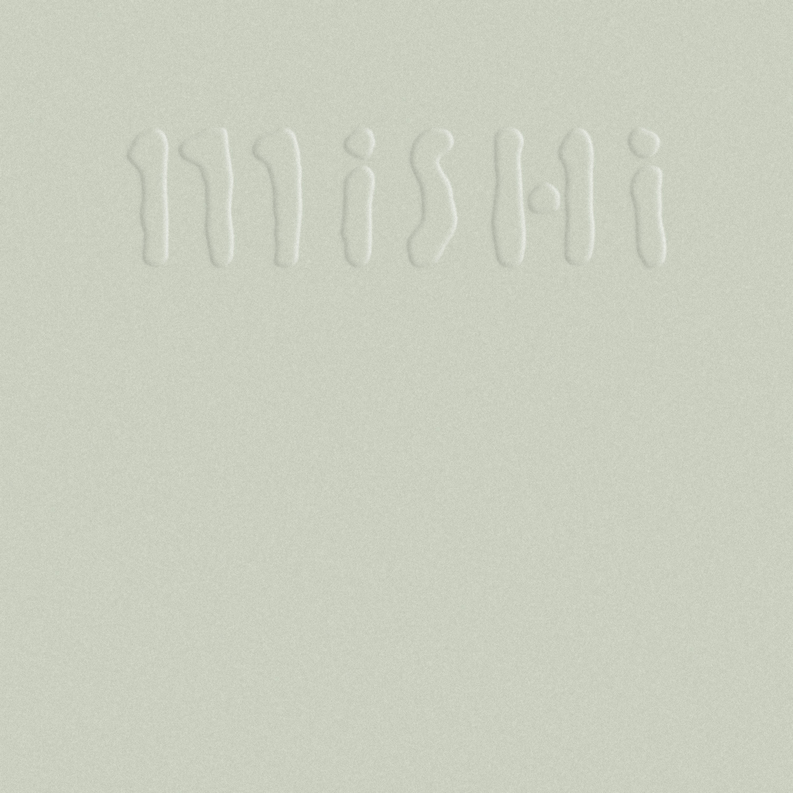
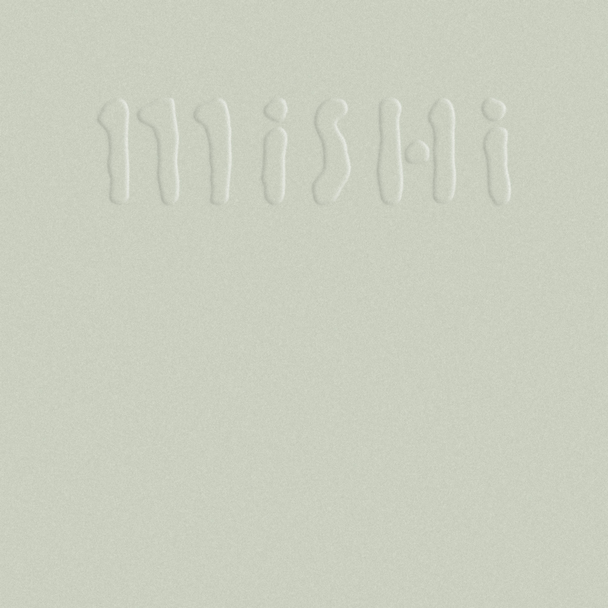
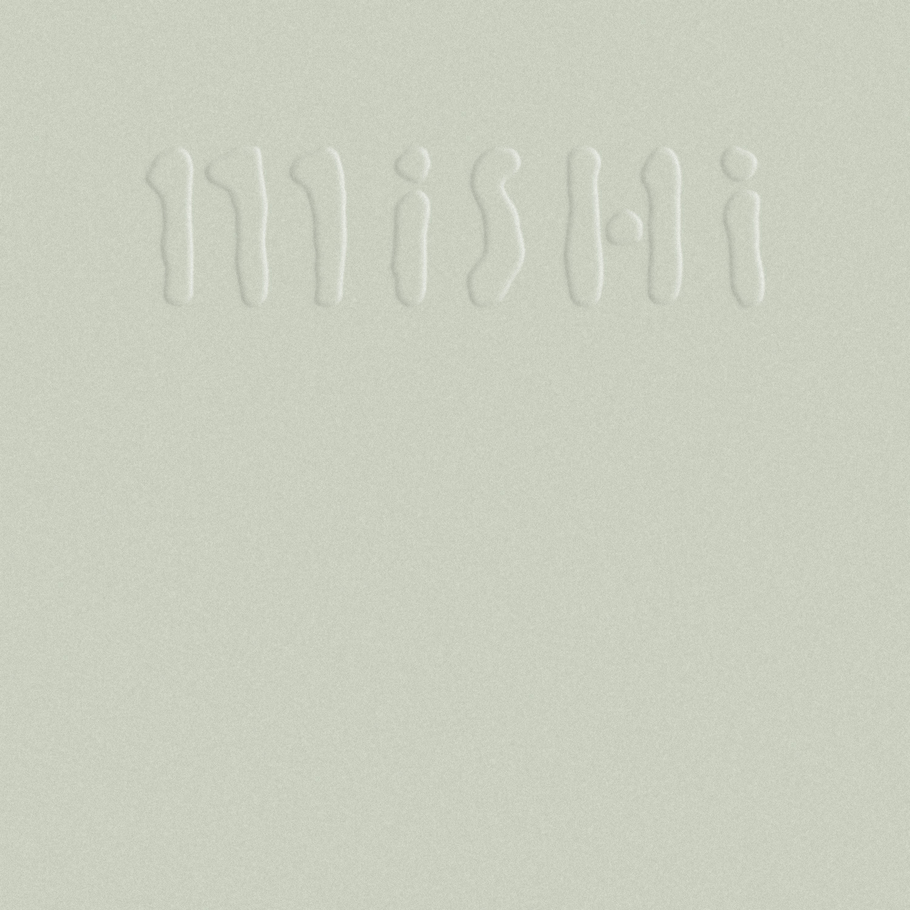
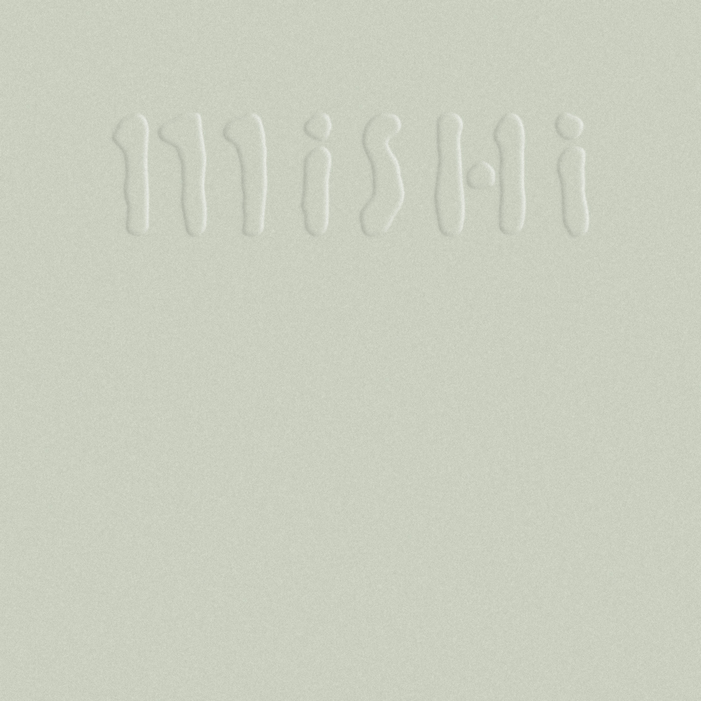
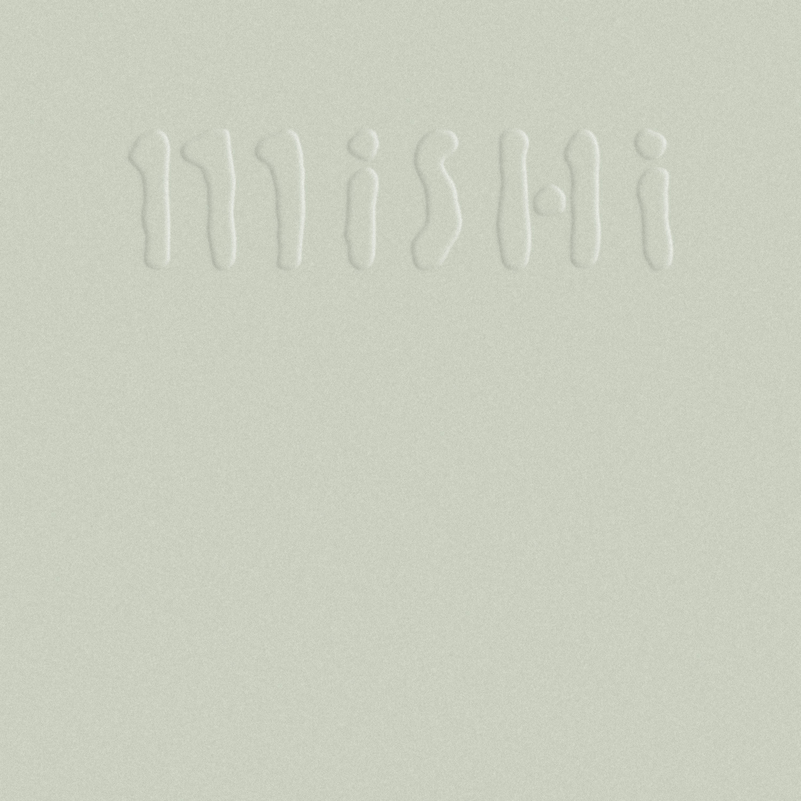

hey, i'm ana roque sá. a designer pretending to be a front end developer,
working on this while you're messing it up
. please
come back
later :)

will be back in a minute, wait for me.
hope it can make your eyes happy during these
0 seconds
behance
github
daylight
about


 



 
